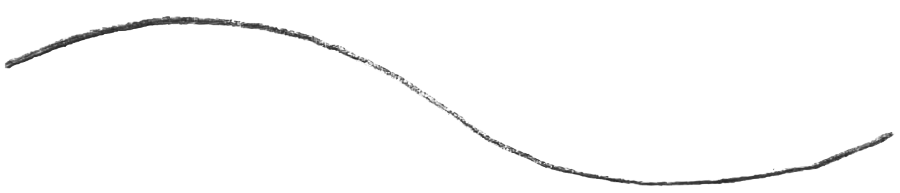

04/28/2021, 8pm est, Mill River
41°20'09.3"N 72°54'37.7"W
Dear Listeners, Stream of a stream is an ongoing gathering of streams. Each stream is recorded with an underwater microphone and uploaded to a music streaming service. There the sound of streams - the natural flow of water metamorphoses into a steady, continuous flow of data transmitting over the internet. Stream of a stream. What does it mean?

Long before recorded history, people have intervened with streams, altering its course, characteristics or flow to manage water resources, protect against flooding, or make passage across river easier. Now when I think of stream, I think of streaming music, movies, data. How do we interfere with this stream? Do we also build mills on them to generate power? For who? Who lives in the cities near the stream, where the land is fertile and who lives far? How is the course of the stream altered?